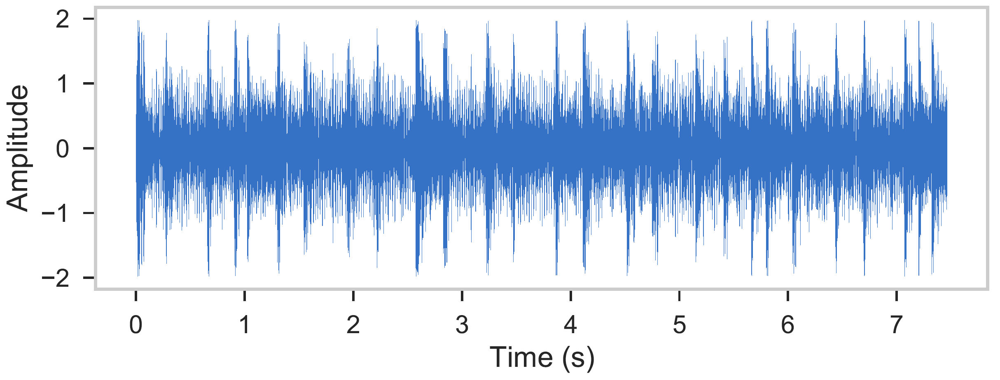
Music structure
Audio signal
Symbolic representation
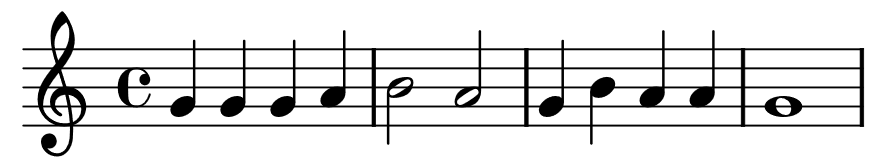
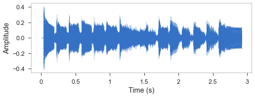
Song organisation
(ground-truth)
High-scale (sectional level)
Low-scale
Boundary retrieval
Quantitatively evaluates the relevance of a music analysis model
Homogeneity/Novelty
Repetition
\Rightarrow Notion of similarity and dissimilarity accross the song
[Nie+20] Nieto, O., Mysore, G. J., Wang, C., Smith, J. B. L., Schlüter, J., Grill, T., & McFee, B. (2020). Audio-Based Music Structure Analysis: Current Trends, Open Challenges, and Applications. Transactions of the International Society for Music Information Retrieval
Practical example
“Come Together” – The Beatles
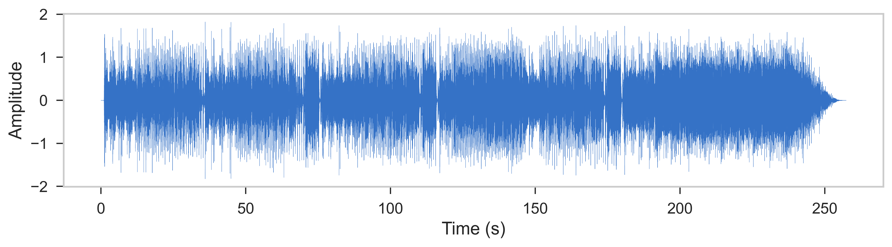
Intro Verse 1 Verse 2 Chorus
Solo 1
Solo 2
Outro
List of boundaries
(e.g. [0, 3.1, 4.5])
Segmentation
algorithm
Machine Learning
Decision: determined by a human (coded)
Conventional algorithm
Decision: inferred from data (“learning”)
Machine Learning algorithm
(learning phase)
deep learning [GS15]
Annotation:
No boundary
Annotation:
Boundary
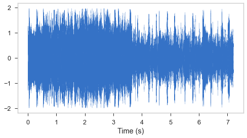
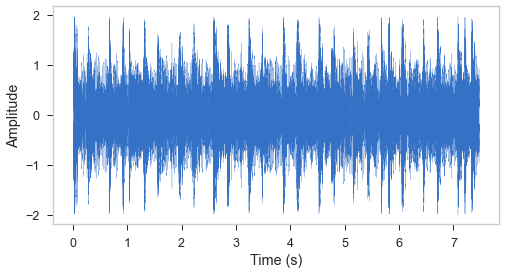
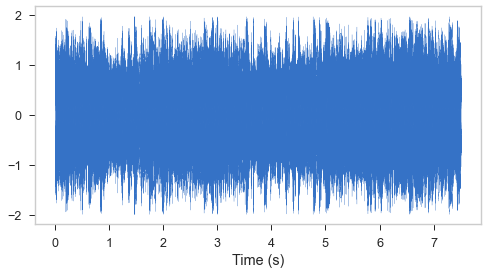
Annotation:
No boundary
[Got+02] Goto, M., Hashiguchi, H., Nishimura, T., & Oka, R. (2002). RWC Music Database: Popular, Classical and Jazz Music Databases. ISMIR, 2, pp. 287–288
[Smi+11] Smith, J. B. L., Burgoyne, J. A., Fujinaga, I., De Roure, D., & Downie, J. S. (2011). Design and Creation of a Large-Scale Database of Structural Annotations. ISMIR, 11, pp. 555–560
[GS15] Grill, T., & Schlüter, J. (2015). Music Boundary Detection Using Neural Networks on Combined Features and Two-Level Annotations. ISMIR, pp. 531–537
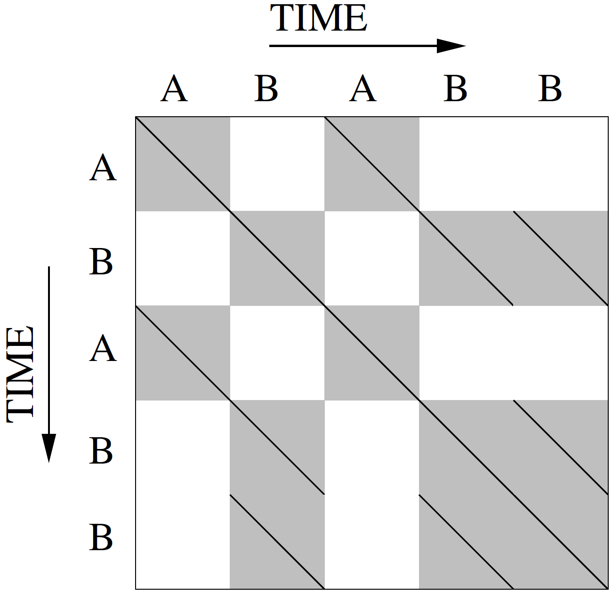
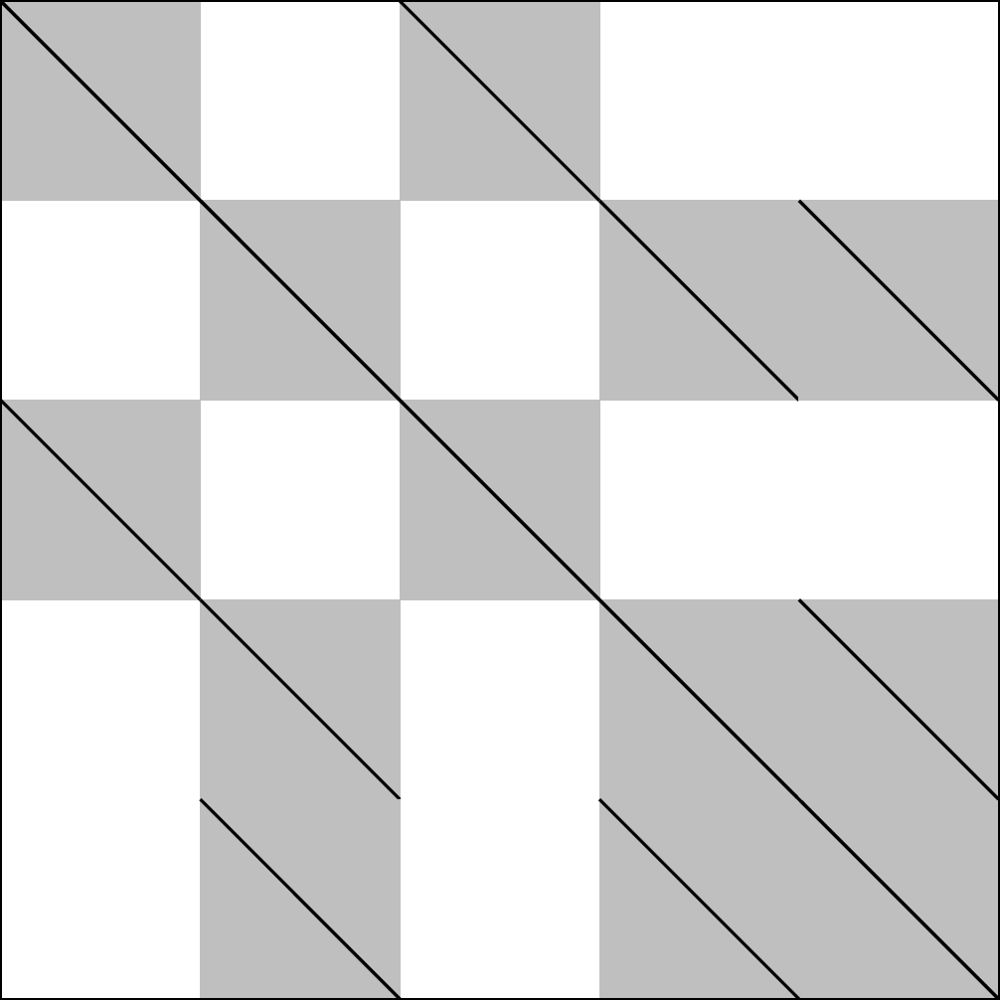
[Foo00] Foote, J. (2000). Automatic Audio Segmentation Using a Measure of Audio Novelty. IEEE International Conference on Multimedia and Expo (ICME), pp. 452–455
[ME14] McFee, B., & Ellis, D. P. W. (2014). Analyzing Song Structure with Spectral Clustering. ISMIR, pp. 405–410
[Ser+14] Serrà, J., Müller, M., Grosche, P., & Arcos, J. Ll. (2014). Unsupervised Music Structure Annotation by Time Series Structure Features and Segment Similarity. IEEE Transactions on Multimedia, 16(5), pp. 1229–1240
t Time
\left\vert \begin{array}{l} F_{0.5} \\ F_3 \end{array} \right.
(MIREX standard)
Music
NTD
NMF
PCA
AutoEncoders
AE-NTD
ftb
ftb
Spectrogram
(feature description)
\text{Ω} (time)
Frequency scale
(Log Mel Spectrogram)
Musical scale
(Chromagram)
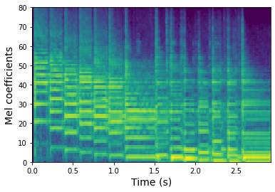
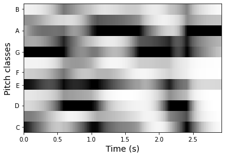
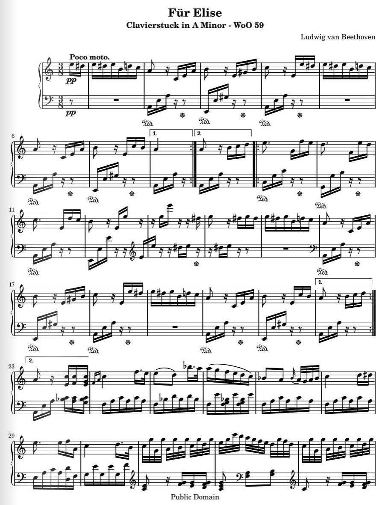
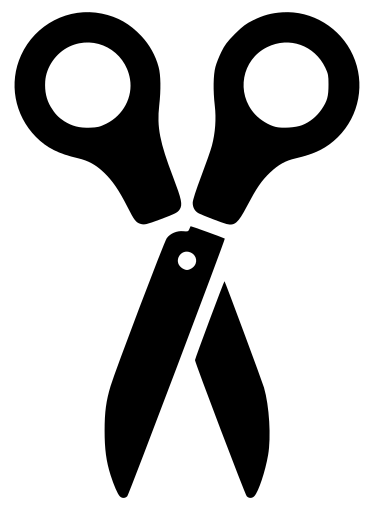
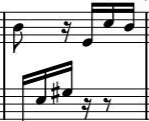
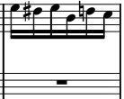
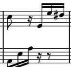
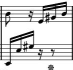
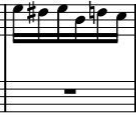
…
ft b
Bars are estimated via an external toolbox (madmom [Böc+16])
[Böc+16] Böck, S., Korzeniowski, F., Schlüter, J., Krebs, F., & Widmer, G. (2016). Madmom: A New Python Audio and Music Signal Processing Library. Proceedings of the 24th ACM International Conference on Multimedia, pp. 1174–1178
Barwise spectrograms
Original
spectrogram
\Omega
t
b bars
ftb
Time-Frequency-Bar Tensor (TFB)
btf Barwise TF matrix “Matricisation”
Music
NTD
NMF
PCA
AutoEncoders
AE-NTD
[0,4,8,16,20,25]
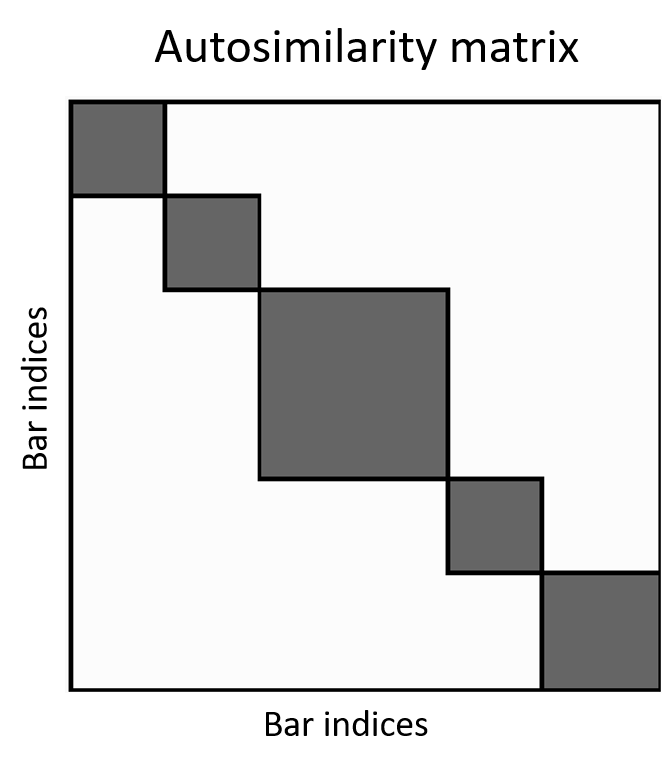
[0,4,8,16,20,25]
btf X
bb A(X)
A{\left( X \right)}_{11}=s\left( {X}_{1},{X}_{1} \right) A{\left( X \right)}_{12}=s\left( {X}_{1},{X}_{2} \right) A{\left( X \right)}_{16}=s\left( {X}_{1},{X}_{6} \right) A{\left( X \right)}_{45}=s\left( {X}_{4},{X}_{5} \right)
A(X)
{\text{Z}}^{*}={\text{argmax}}_{Z}\sum_{{S}_{i}\in Z} \gamma ({S}_{i})
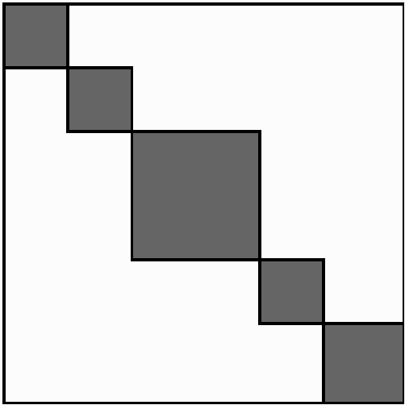
[0,4,8,16,20,25]
Cosine autosimilarity
“Come Together”
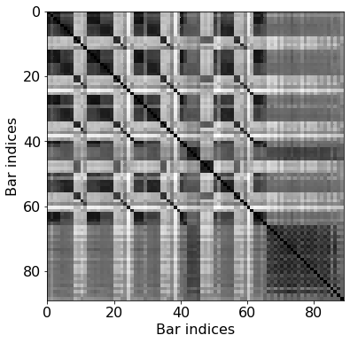
[Foo00] Foote, J. (2000). Automatic Audio Segmentation Using a Measure of Audio Novelty. IEEE International Conference on Multimedia and Expo (ICME), pp. 452–455
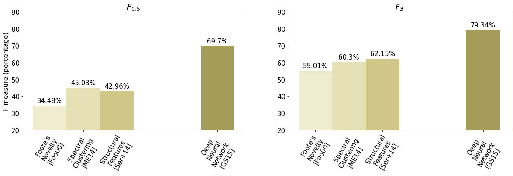
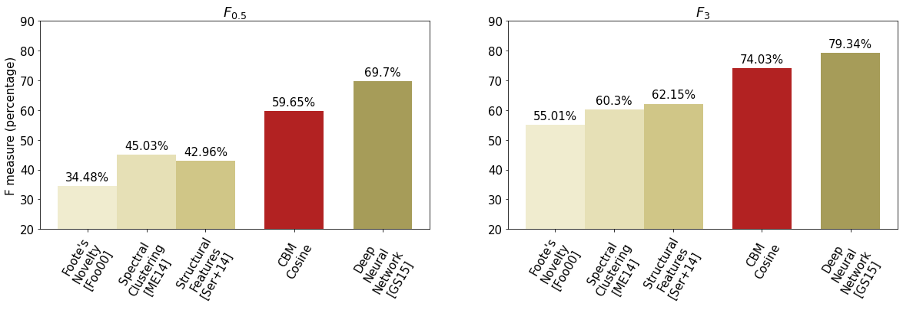
Segmentation results, compared with the State-of-the-Art (RWC Pop dataset [Got+02])
[Foo00, ME14, Ser+14, GS15]
[Got+02] Goto, M., Hashiguchi, H., Nishimura, T., & Oka, R. (2002). RWC Music Database: Popular, Classical and Jazz Music Databases. ISMIR, 2, pp. 287–288
[Foo00] Foote, J. (2000). Automatic Audio Segmentation Using a Measure of Audio Novelty. IEEE International Conference on Multimedia and Expo (ICME), pp. 452–455
[ME14] McFee, B., & Ellis, D. P. W. (2014). Analyzing Song Structure with Spectral Clustering. ISMIR, pp. 405–410
[Ser+14] Serrà, J., Müller, M., Grosche, P., & Arcos, J. Ll. (2014). Unsupervised Music Structure Annotation by Time Series Structure Features and Segment Similarity. IEEE Transactions on Multimedia, 16(5), pp. 1229–1240
[GS15] Grill, T., & Schlüter, J. (2015). Music Boundary Detection Using Neural Networks on Combined Features and Two-Level Annotations. ISMIR, pp. 531–537
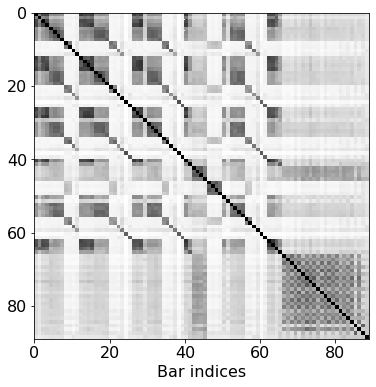
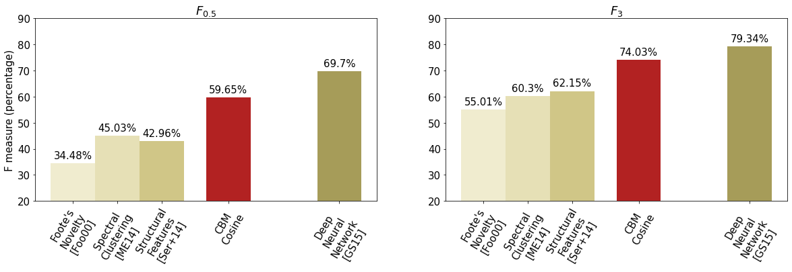
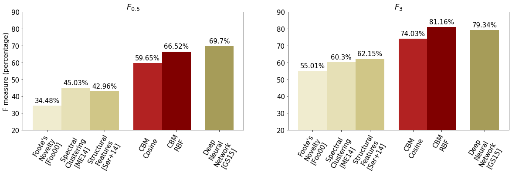
Segmentation results, compared with the State-of-the-Art (RWC Pop dataset)
Music
NTD
NMF
PCA
AutoEncoders
AE-NTD
Compression
btf bk
Music
NTD
NMF
PCA
AutoEncoders
AE-NTD
\mathscr{X}
(TFB Tensor)
\approx Wfr_f \mathscr{G}r_fr_tr_b Hr_tt Qr_bb \mathscr{X}=\mathscr{G}{\times }_{1}W{\times }_{2}H{\times }_{3}Q
\mathscr{X}
(TFB Tensor)
\approx Wfr_f \mathscr{G}r_fr_tr_b Hr_tt Qr_bb \mathscr{X}=\mathscr{G}{\times }_{1}W{\times }_{2}H{\times }_{3}Q
X \approx Wk Vk X\approx \ WV
NMF for Music Transcription [SB03]
Example adapted from [Wu+22]
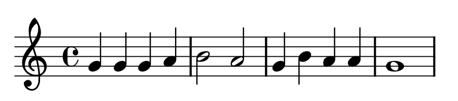
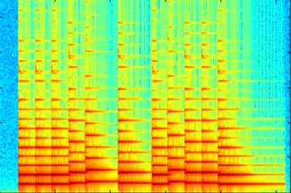
\approx Frequency Time 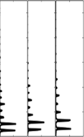 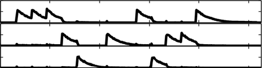
X\approx \ WV
[SB03] Smaragdis, P., & Brown, J. C. (2003). Non-Negative Matrix Factorization for Polyphonic Music Transcription. IEEE Workshop on Applications of Signal Processing to Audio and Acoustics (WASPAA), pp. 177–180
[Wu+22] Wu, H., Marmoret, A., & Cohen, J. E. (2022). Semi-Supervised Convolutive NMF for Automatic Music Transcription. 19th Sound and Music Computing Conference (SMC 2022)
W G H
X=\ WGH X =
Barwise musical pattern: WGH
G
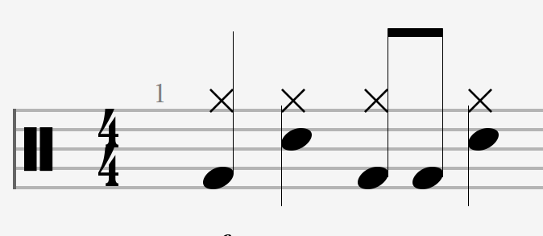 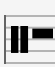 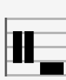 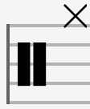
W G H
X=W\left( \sum_{i} {q}_{[i]}{G}_{[::i]} \right)H q
X =
W G H
Barwise spectrogram {X}_{[::0]}
\approx
{X}_{[::k]}=W\left( \sum_{i} {Q}_{[ki]}{G}_{[::i]} \right)H Q
\mathscr{X}
(TFB Tensor)
\approx Wfr_f \mathscr{G}r_fr_tr_b Hr_tt Qr_bb
\mathscr{X}=\mathscr{G}{\times }_{1}W{\times }_{2}H{\times }_{3}Q
\mathscr{G}
\approx
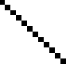
W \mathscr{G} H Q \mathscr{X} “Come Together”{\text{argmin}}_{\mathscr{G}\geq 0,\ W\geq 0,\ H\geq 0,\ Q\geq 0}\ d(\mathscr{X}\text{, }\mathscr{G}{\times }_{1}W{\times }_{2}H{\times }_{3}Q)
\hl{1-}{accent}{{d}_{euc}\left( x\middle| y \right)= {\left\| x-y \right\|}_{2}^{2}}
{d}_{\beta }\left( x\middle| y \right)=\begin{cases} \hl{1-}{accent}{\frac{x}{y}-\log\left( \frac{x}{y} \right)-1} & \hl{1-}{accent}{\beta =0 \text{ (Itakura-Saïto)}} \\[1.2em] \hl{1-}{accent}{x\log\left( \frac{x}{y} \right)+\left( y-x \right)} & \hl{1-}{accent}{\beta =1 \text{ (Kullback-Leibler)}} \\[1.2em] \frac{{x}^{\beta }+\left( \beta -1 \right){y}^{\beta }-\beta x{y}^{\beta -1}}{\beta \left( \beta -1 \right)} & \beta \in \mathbb{R}\setminus \{0,1\} \end{cases}
[Mar+20] Marmoret, A., Cohen, J. E., Bertin, N., & Bimbot, F. (2020). Uncovering Audio Patterns in Music with Nonnegative Tucker Decomposition for Structural Segmentation. ISMIR, pp. 788–794
[GG12] Gillis, N., & Glineur, F. (2012). Accelerated Multiplicative Updates and Hierarchical ALS Algorithms for Nonnegative Matrix Factorization. Neural Computation, 24(4), pp. 1085–1105
[Mar+22] Marmoret, A., Voorwinden, F., Leplat, V., Cohen, J. E., & Bimbot, F. (2022). Nonnegative Tucker Decomposition with Beta-Divergence for Music Structure Analysis of Audio Signals. GRETSI
[FI11] Févotte, C., & Idier, J. (2011). Algorithms for Nonnegative Matrix Factorization with the \beta-Divergence. Neural Computation, 23(9), pp. 2421–2456
Musical patterns W{\mathscr{G}}_{[::i]}H?
W{\mathscr{G}}_{[::i]}H Audio signal
STFT
Audio signal spectrogram
NTD
ISTFT*
(One musical pattern)
*Phase information: from the original STFT
\mathscr{G}
\approx W \mathscr{G} H Q \mathscr{X}
“Come Together”
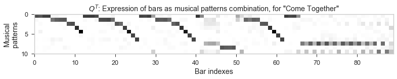
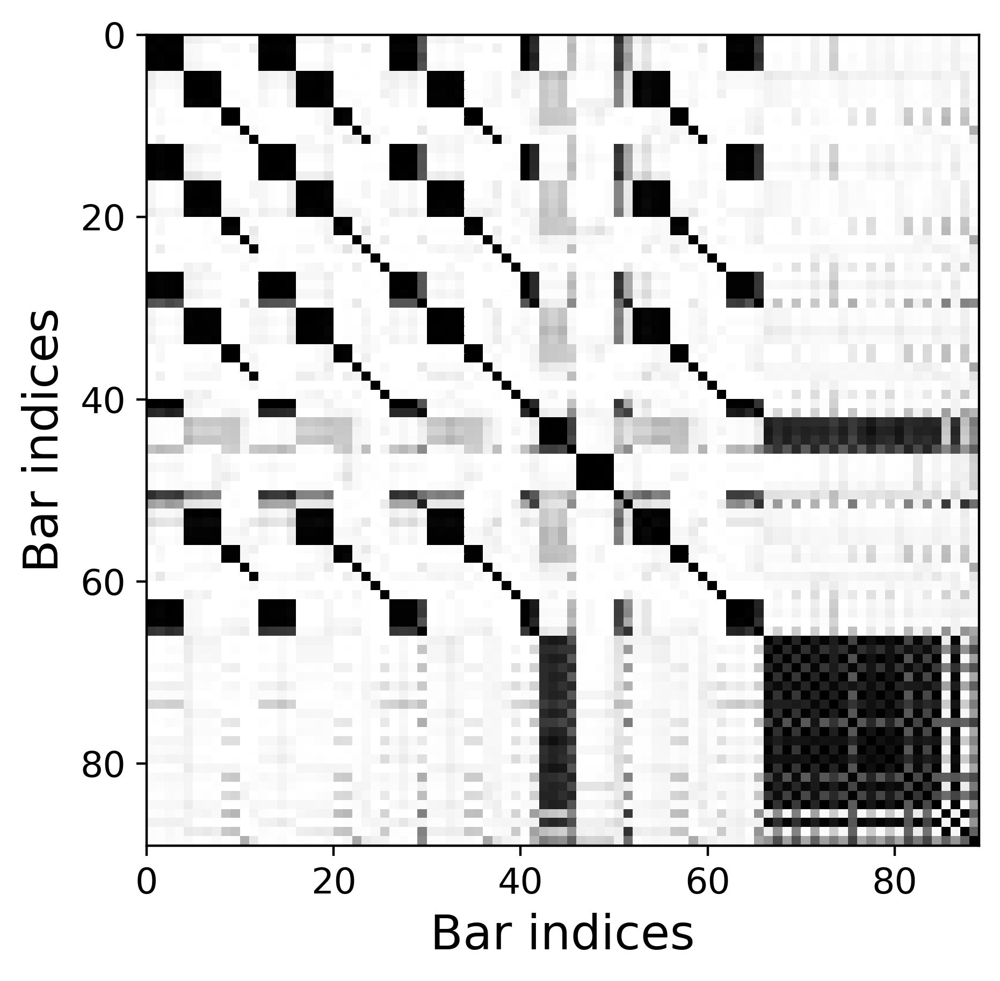
\Rightarrow Higher contrast with NTD (as desired)
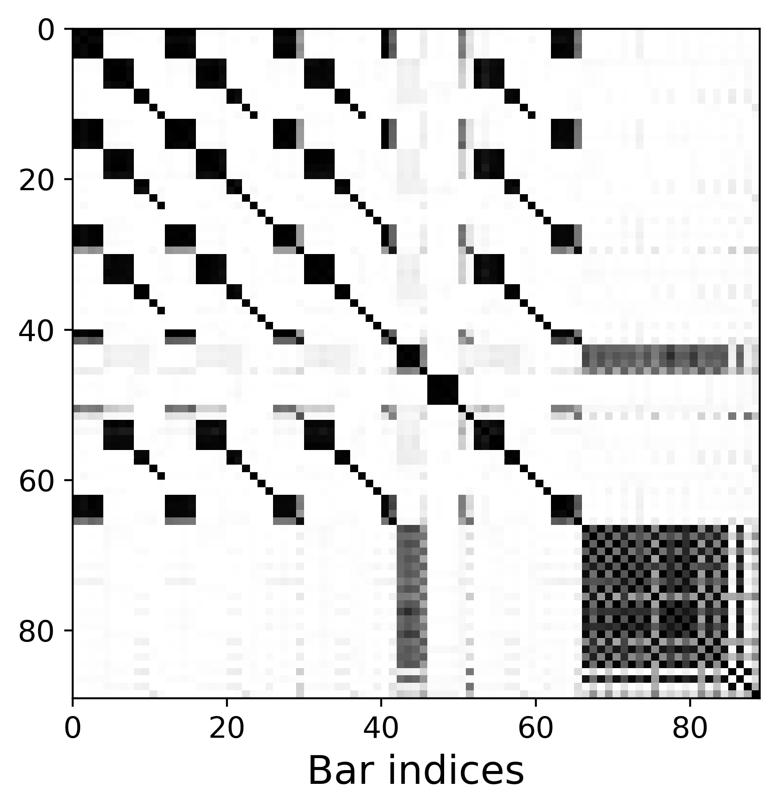
Cosine RBF Uncompressed NTDSegmentation results, according to parameters (RWC Pop dataset)
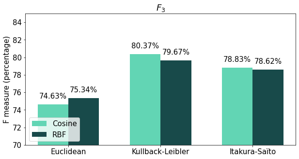
Segmentation results, compared with State-of-the-art (RWC Pop dataset)
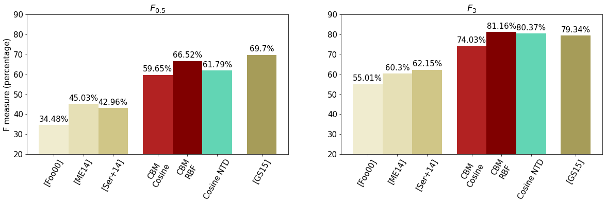
Music
NTD
NMF
PCA
AutoEncoders
AE-NTD
Barwise spectrograms Q
NTD
NMF
PCA
Autoencoders
Barwise spectrograms Q
NTD
NMF
PCA
Autoencoders
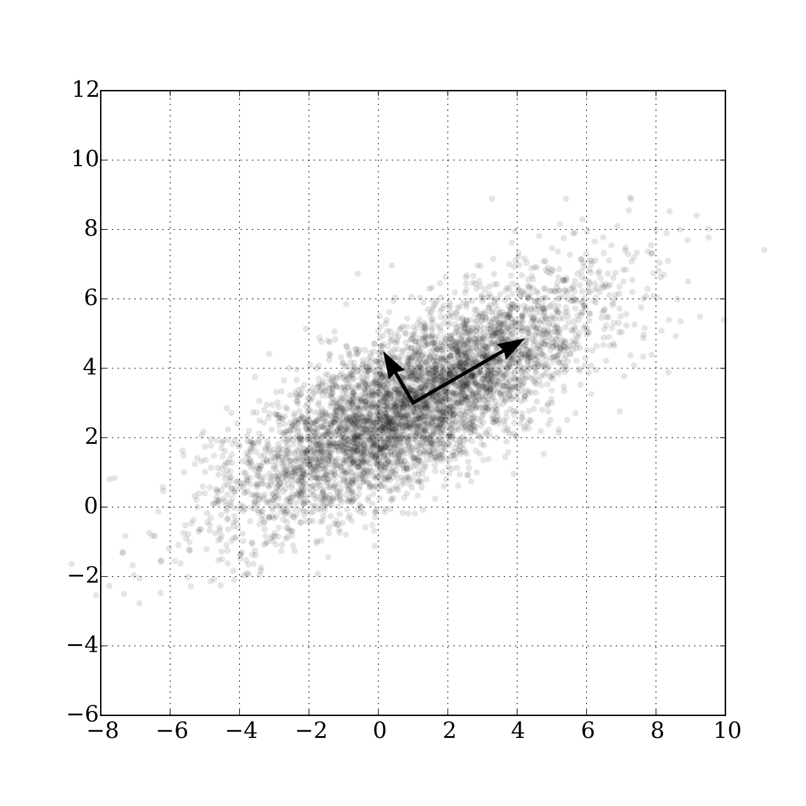
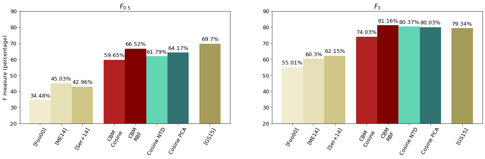
Music
NTD
NMF
PCA
AutoEncoders
AE-NTD
X_i^Tft Encoder Q_i^T \mathscr{G}_{(2)}^T \xrightarrow{\;a()\;} (W \otimes H) \xrightarrow{\;a()\;} \hat{X}_i^Tft
X_i^Tft Encoder Q_i^T \mathscr{G}_{(2)}^T \xrightarrow{\;a()\;} (W \otimes H) \xrightarrow{\;a()\;} \hat{X}_i^Tft
X_i^Tft Encoder
(\theta) Q_i^Tk Decoder
(\Psi) \hat{X}_i^Tft
Objective function: {\text{argmin}}_{\theta ,\text{Ψ}}\ d({X}_{i},{\hat{X}}_{i})
\mathscr{X}ftb
\mathscr{X}_{(2)}bft\mathscr{X}_{(2)}
(Barwise TF)
\approx Q \mathscr{G}_{(2)} {\left( W\otimes H \right)}^{T}
“Matricisation”
Kronecker product
Barwise TF matrix
Latent
representation
2 matrix products
2 fully-connected
layers
NTD-AutoEncoder:
NTD as a 2-layer decoder
X_i^Tft Encoder
(\theta) Q_i^T \mathscr{G}_{(2)}^T \xrightarrow{\;a()\;} (W \otimes H) \xrightarrow{\;a()\;} \hat{X}_i^Tft
Initialization: NTD results, random (… or in between)
a(): nonnegative activation function (ReLU, sotfplus, …)
Objective function: {\text{argmin}}_{\theta,\mathscr{G},W,H,Q}\ d(X_i,\hat{X}_i)(RWC Pop)
\Rightarrow Empirical trade-off between segmentation performance and interpretability
| NTD (original) |
Decoder: NTD Init |
Decoder: Random init |
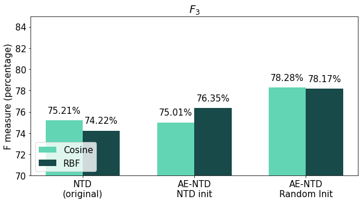
Music
NTD
NMF
PCA
AutoEncoders
AE-NTD
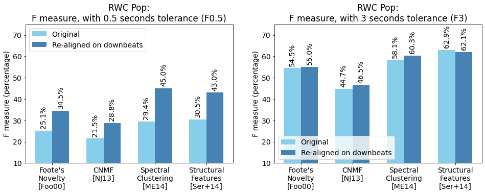
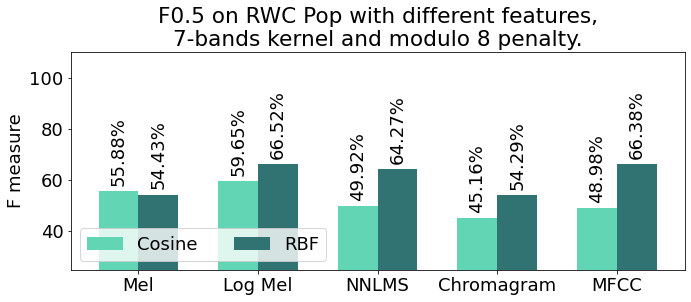
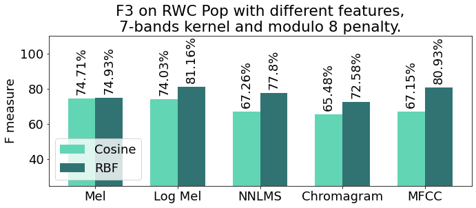
\gamma ([{b}_{i},\ {b}_{j}[)=\frac{1}{j\ -i}\sum_{k=0}^{i-1} \sum_{l=0}^{j-1} {A(X)}_{i+k,\ i+l}{K}_{k,l}\ +p(j-i)
{\text{Z}}^{*}={\text{argmax}}_{Z}\sum_{{S}_{i}\in Z} \gamma ({S}_{i})
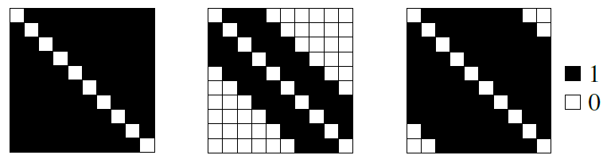
b_1 : 0 b_2\,:2 b_3\,:6 b_4\,:10
2 6 1 8 1 4
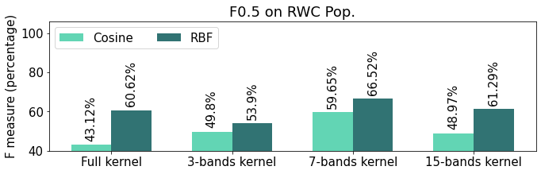
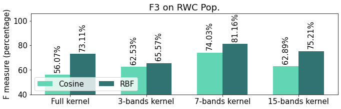
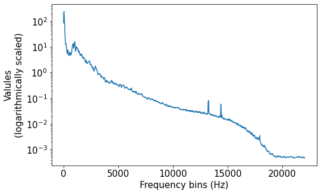
By Lindosland http://en.wikipedia.org/wiki/Image:Lindos1.svg, Public Domain, https://commons.wikimedia.org/w/index.php?curid=2565926[FBD09] Cédric Févotte, Nancy Bertin, and Jean-Louis Durrieu, « Nonnegative matrix factorization with the Itakura-Saito divergence: With application to music analysis », in: Neural computation 21.3 (2009), pp. 793–830.
[FBD09] Févotte, C., Bertin, N., & Durrieu, J.-L. (2009). Nonnegative Matrix Factorization with the Itakura-Saito Divergence: With Application to Music Analysis. Neural Computation, 21(3), pp. 793–830
\beta-divergence
{d}_{\beta }\left( x\middle| y \right)=\begin{cases} \frac{x}{y}-\log\left( \frac{x}{y} \right)-1 & \beta =0 \text{ (Itakura-Saïto)} \\[1.2em] x\log\left( \frac{x}{y} \right)+\left( y-x \right) & \beta =1 \text{ (Kullback-Leibler)} \\[1.2em] \frac{{x}^{\beta }+\left( \beta -1 \right){y}^{\beta }-\beta x{y}^{\beta -1}}{\beta \left( \beta -1 \right)} & \beta \in \mathbb{R}\setminus \{0,1\} \end{cases}
(\beta =2:Euclidean\ norm)
For any \beta \in \ \mathbb{R},\ \lambda \in \mathbb{R}, {d}_{\beta }\left( \lambda x\middle| \lambda y \right)={\lambda }^{\beta }\ {d}_{\beta }\left( x\middle| y \right)
\beta =2\ \Rightarrow {d}_{2}\left( \lambda x\middle| \lambda y \right)=\ {{\lambda }^{2}d}_{\beta }\left( x\middle| y \right) \beta =1\ \Rightarrow {d}_{1}\left( \lambda x\middle| \lambda y \right)=\ \lambda {d}_{\beta }\left( x\middle| y \right) \beta =0\ \Rightarrow {d}_{0}\left( \lambda x\middle| \lambda y \right)=\ {d}_{\beta }\left( x\middle| y \right)
( Example: {d}_{\beta }\left( 100\middle| 10 \right) vs {d}_{\beta }\left( 0.1\middle| 0.01 \right) )
Close
metric
Large
metric
Seconds Barwise aligned
Close
metric
Large
metric
Seconds Barwise aligned
Objective: interpretable patterns in the decoder
Objective: improve the NTD outputs, and follow state-of-the-art research
Objective: benefiting from recent developments in Neural networks computation
\hat{X}=US{V}^{T}
(\hat{X}: centered X matrix)
PCA: Q=\hat{X}{V}_{[:k]}
btf bk X Q
Results on SALAMI
[Böc+16] Böck, S., Korzeniowski, F., Schlüter, J., Krebs, F., & Widmer, G. (2016). Madmom: A New Python Audio and Music Signal Processing Library. Proceedings of the 24th ACM International Conference on Multimedia, pp. 1174–1178
[FBD09] Févotte, C., Bertin, N., & Durrieu, J.-L. (2009). Nonnegative Matrix Factorization with the Itakura-Saito Divergence: With Application to Music Analysis. Neural Computation, 21(3), pp. 793–830
[FI11] Févotte, C., & Idier, J. (2011). Algorithms for Nonnegative Matrix Factorization with the \beta-Divergence. Neural Computation, 23(9), pp. 2421–2456
[Foo00] Foote, J. (2000). Automatic Audio Segmentation Using a Measure of Audio Novelty. IEEE International Conference on Multimedia and Expo (ICME), pp. 452–455
[GG12] Gillis, N., & Glineur, F. (2012). Accelerated Multiplicative Updates and Hierarchical ALS Algorithms for Nonnegative Matrix Factorization. Neural Computation, 24(4), pp. 1085–1105
[Got+02] Goto, M., Hashiguchi, H., Nishimura, T., & Oka, R. (2002). RWC Music Database: Popular, Classical and Jazz Music Databases. ISMIR, 2, pp. 287–288
[GS15] Grill, T., & Schlüter, J. (2015). Music Boundary Detection Using Neural Networks on Combined Features and Two-Level Annotations. ISMIR, pp. 531–537
[KC07] Kim, Y.-D., & Choi, S. (2007). Nonnegative Tucker Decomposition. IEEE Conference on Computer Vision and Pattern Recognition (CVPR), pp. 1–8
[Mar+20] Marmoret, A., Cohen, J. E., Bertin, N., & Bimbot, F. (2020). Uncovering Audio Patterns in Music with Nonnegative Tucker Decomposition for Structural Segmentation. ISMIR, pp. 788–794
[Mar+22] Marmoret, A., Voorwinden, F., Leplat, V., Cohen, J. E., & Bimbot, F. (2022). Nonnegative Tucker Decomposition with Beta-Divergence for Music Structure Analysis of Audio Signals. GRETSI
[MCB22a] Marmoret, A., Cohen, J. E., & Bimbot, F. (2022). Convolutive Block-Matching Segmentation Algorithm with Application to Music Structure Analysis. arXiv preprint arXiv:2210.15356 (Submitted to ICASSP 2023)
[MCB22b] Marmoret, A., Cohen, J. E., & Bimbot, F. (2022). Barwise Compression Schemes for Audio-Based Music Structure Analysis. 19th Sound and Music Computing Conference (SMC 2022)
[ME14] McFee, B., & Ellis, D. P. W. (2014). Analyzing Song Structure with Spectral Clustering. ISMIR, pp. 405–410
[Nie+20] Nieto, O., Mysore, G. J., Wang, C., Smith, J. B. L., Schlüter, J., Grill, T., & McFee, B. (2020). Audio-Based Music Structure Analysis: Current Trends, Open Challenges, and Applications. Transactions of the International Society for Music Information Retrieval
[SB03] Smaragdis, P., & Brown, J. C. (2003). Non-Negative Matrix Factorization for Polyphonic Music Transcription. IEEE Workshop on Applications of Signal Processing to Audio and Acoustics (WASPAA), pp. 177–180
[Ser+14] Serrà, J., Müller, M., Grosche, P., & Arcos, J. Ll. (2014). Unsupervised Music Structure Annotation by Time Series Structure Features and Segment Similarity. IEEE Transactions on Multimedia, 16(5), pp. 1229–1240
[SG18] Smith, J. B. L., & Goto, M. (2018). Nonnegative Tensor Factorization for Source Separation of Loops in Audio. IEEE International Conference on Acoustics, Speech and Signal Processing (ICASSP), pp. 171–175
[Smi+11] Smith, J. B. L., Burgoyne, J. A., Fujinaga, I., De Roure, D., & Downie, J. S. (2011). Design and Creation of a Large-Scale Database of Structural Annotations. ISMIR, 11, pp. 555–560
[Wu+22] Wu, H., Marmoret, A., & Cohen, J. E. (2022). Semi-Supervised Convolutive NMF for Automatic Music Transcription. 19th Sound and Music Computing Conference (SMC 2022)